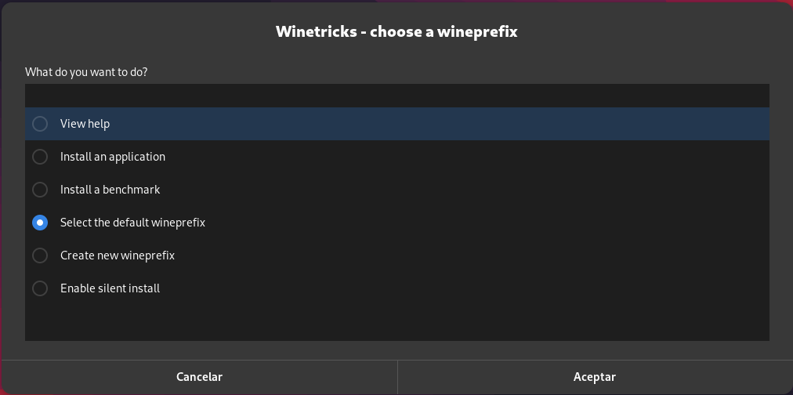

XxAlitokerxX Mi Cueva Digital: Donde Tú Eres la Inspiración
🐧 Descubriendo The Nobara Project: Fedora Linux Mejorado
¡Bienvenidos a Mi Cueva Digital! Hoy exploraremos un emocionante proyecto llamado The Nobara Project. ¿Qué es esto? ¿Cómo puede hacer que tu experiencia con Linux sea aún mejor? ¡Sigue leyendo para descubrirlo!
🤔 ¿Qué es The Nobara Project?
The Nobara Project es una versión personalizada de Fedora Linux con mejoras que hacen que la experiencia sea aún más atractiva y fácil de usar. Si bien Fedora es un excelente sistema operativo, puede ser un desafío para los usuarios novatos que desean instalar software de terceros o controladores propietarios.
🎮 Juegos, Transmisión y Creatividad
Una de las principales metas de The Nobara Project es mejorar la experiencia de juego, transmisión y creación de contenido. ¿Qué significa eso para ti? Significa que puedes disfrutar de tus juegos favoritos, hacer streaming de tus aventuras y trabajar en proyectos creativos sin problemas.
🚀 Características Destacadas
¿Qué hace que The Nobara Project sea especial? Aquí tienes algunas de sus características más destacadas:
- Actualizaciones y parches del kernel para mejorar el rendimiento y la compatibilidad.
- Compatibilidad con tarjetas gráficas NVIDIA y AMD.
- Controladores y codecs para una experiencia multimedia perfecta.
- Soporte para Steam Deck y Microsoft Surface.
🖥️ Usabilidad para Todos
The Nobara Project se esfuerza por ser amigable para todos, desde usuarios principiantes hasta usuarios avanzados. No necesitas ser un genio de la terminal; puedes disfrutar de la simplicidad de "hacer clic" mientras aprovechas al máximo tu sistema Linux.
🌟 Tu Cueva Digital
Recuerda que en Mi Cueva Digital, la tecnología es solo una parte de nuestra pasión. También alentamos a todos a compartir sus opiniones y aficiones. La inteligencia no se trata de ser Einstein, sino de saber aprovechar las herramientas que tienes a tu alcance.
📦 ¿Cómo Obtener The Nobara Project?
Puedes acceder a The Nobara Project y disfrutar de estas increíbles mejoras en tu sistema Fedora. ¡Visita su sitio web oficial para obtener más información y descargas!
Sitio web oficial de The Nobara Project
🚀 ¡Explora y Disfruta!
The Nobara Project es una emocionante iniciativa que puede llevar tu experiencia con Fedora Linux al siguiente nivel. Así que, ¿por qué esperar? ¡Explora y disfruta de tu nuevo y mejorado sistema operativo!
Recuerda que la inteligencia no es ser superdotado, sino saber aprovechar las herramientas a tu alcance. ¡Diviértete explorando y aprendiendo!
Gracias por unirte a nosotros en esta emocionante aventura tecnológica. ¡Nos vemos en la Cueva Digital! 👋
Si necesitas ayuda no dudes de dejar tu comentario Aqui!!!Estare encantado de ayudarte